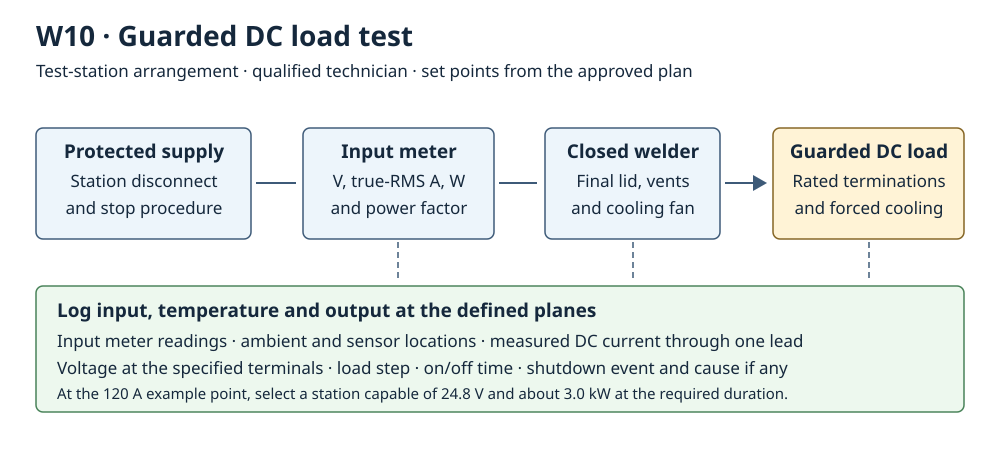

Qualify and sell a stick welding set in India
Use a guarded load test, a finished-model qualification plan and serial-numbered records to release a manual pilot batch.

Photo by Bruno Bouygues. Original photograph · CC BY-SA 3.0.

Watch. Observe the lead connections, current setting and polarity selection. Write down the comparable settings for your supervised welding acceptance test. Miller Electric · Multimatic 215 PRO stick welding setup.
Decide which checks qualify the design and which release each unit
Bring the model specification, intended professional use, wiring diagram, BOM, rating plate draft and target installation to BIS and a lab that lists the applicable standard in its scope. BIS lists IS 16593 (Part 1):2024 for welding power sources. The April 2024 BIS product manual is based on the previous edition and shows the scope and model evidence requested for that edition. Confirm the edition, conformity and licence route and the current test schedule for your finished model. The Ministry of Heavy Industries withdrew the 2024 Omnibus Technical Regulation in January 2026. Check the current orders that apply to your model, components and supply arrangement. BIS · Current welding power-source standard · BIS · Earlier product manual · Ministry of Heavy Industries · Withdrawal.
| Design qualification | Routine unit evidence |
|---|---|
| Electrical safety, isolation, protective bonding, touch/leakage as applicable, open-circuit voltage and protection, at the finished-model level. | Visual and electrical checks from the approved routine test plan. Capture instrument ID, limits, result and operator for each unit. |
| Rated load and duty cycle, temperature rise, abnormal conditions, enclosure access, mechanical strength and EMC in the declared installation class. IEC · Welding EMC standard. | Calibration points, indicators, fan and protection checks as specified, plus output function and final rating plate. Qualification evidence supplies the approved routine limits. |
| Review changes to the transformer, PCB, firmware, fans, vents, enclosure, switch or cord before accepting substitutions. | Record BOM and drawing revision, critical component lots, any rework and the required repeat tests. |
Ask two labs to price the same scope. Send the W09 specification, photos, nameplate draft, electrical schematic, declared duty and installation class. Ask for the applicable edition and clauses, a copy of the relevant accredited scope, sample count, test schedule, destructive-test requirements, written report, retest price, tax and dispatch terms. Check recognition requirements with BIS for the selected certification route. Budget EMC, electrical safety and load/duty checks as separate quote lines so the quote exposes any exclusions. BIS · Recognised lab directory · NABL · Accreditation and scope search.
Run a measured load test before striking an arc


Watch a commercial validation setup. Identify the load bank, controller and measured welding output. Compare this equipment with the manual validation instructions when specifying a quote for your bench. Kemppi · ArcValidator demonstration · Kemppi · Connection and manual validation guide.
| Bench item | Specification and India procurement |
|---|---|
| Guarded welding load and reference readings View load equipment | Quote a lab session first. For in-house repeat tests, ask for a guarded adjustable load with the 60–120 A range at 22.4–24.8 V, at least the needed power and duration, documented cooling and rated connectors. Specify hot load steps near 0.207–0.373 Ω for the worked points. Kemppi India · Demonstration or equipment quote · Powertron India · Custom load enquiry · Kemppi · Commercial validator shown. |
| DC output current and voltage instruments View DC clamp meter | Example spot-check instrument, Hioki 3288-20, ₹15,339 including taxes on 22 November 2026. Check DC zero, range and uncertainty. For calibration, use the lab's traceable shunt or calibrated current reference and a suitable voltage channel at the prescribed measurement points. Industrybuying · Clamp meter · Hioki · Photo and instrument details. |
| AC input power and temperature logging View power meter | Example instrument family Hioki PW3335. Specify mains voltage, current range, true-RMS readings, active power, true power factor and logging of the required time profile. Ask for the correct probes, current sensor, protected station and calibration with the quote. Include isolated thermal data logging where the qualification plan calls for it. Hioki India · Meter specifications and enquiry · GoMeasure · PW3335-01 variant photo. |


- Use a competent test technician and a purpose-built guarded load bank with rated current, voltage, power, duration, cooling and protected connections. At W09's 120 A point the load is about 0.207 Ω and 3 kW. Verify the bank's actual hot resistance at the test point and use the measured voltage at the specified terminals. A bank setup needs its own protection, isolation and shutdown procedure.
- Verify the approved de-energised and electrical-safety checks before first power. Lock the case closed during functional testing and record no-load output by the approved method. Begin at a low load setting and work up through the authorised calibration points. Measure output voltage and current and use a power analyser to log input voltage, true RMS current, active power and power factor.
- For qualification, test with the production case, vents and fan. Log ambient temperature, heatsink and magnetics sensor positions, airflow and time at each duty point. Check thermal protection and recovery with the specified qualification procedure. Have the lab run the specified abnormal, dielectric and EMC tests. Calculate the actual duty ratings from the qualified results.
- Have a trained welder run a coupon trial using the intended rods and polarity with suitable fume extraction, PPE and a screened bay. Record stable start, arc behaviour and lead/connector heating. Keep the coupon record with the engineering test results.
| Nominal current | Conventional voltage | Resistance at the point | Output power |
|---|---|---|---|
| 60 A | 22.4 V | 0.373 Ω | 1.34 kW |
| 85 A | 23.4 V | 0.275 Ω | 1.99 kW |
| 120 A | 24.8 V | 0.207 Ω | 2.98 kW |
Example log entry with sample readings: 85 A requested, 84.7 A measured, 23.4 V at the specified terminals and 1.98 kW calculated output. Record the instrument ID and calibration date, supply voltage and power factor, ambient and cooling, load step, time, approved tolerance, disposition and operator. Example readings illustrate the record format. W09 still needs a physically built prototype and approved limits.
Price and release the pilot
Build a small batch by hand after approving the first article. For each unit, assign a serial number and record chassis, inverter and harness revisions, critical parts, inspector, measured results, disposition and retest after repair. Keep one signed reference unit and stock the fan, switches, sockets and matching replacement assembly under revision control.
Price the first unit and ten-unit batch separately. Start with W09's about ₹2,589 retail cable, holder and clamp subtotal. Add landed electronics, magnetics and connectors, case and coating, harnesses, labour minutes, test time, packaging, warranty reserve and channel costs. Keep fixed development and model testing on their own line. Record whether costs include tax and whether your accounting treats input GST as recoverable.
| Worked shop planning example | ₹ per unit | Where to replace the value |
|---|---|---|
| Net receipts | 9,000 | Example after discounts. Use the channel's actual net payment. |
| Target contribution | 2,000 | Planning target before recovering fixed development and qualification. |
| Cable, holder, clamp | 2,589 | W09's one-off retail snapshot. Use the actual batch quote. |
| Assembly labour | 600 | Example 60 minutes at ₹600/hour. Time the first article. |
| Routine test, packing, reserve | 1,150 | Examples ₹500, ₹350 and ₹300 respectively. Use the agreed per-unit costs. |
| Remaining budget for inverter, sockets, case and harness | 2,661 | Subtract the target contribution and listed variable costs from receipts. Compare with W09’s written quotes. |
At the example ₹2,000 contribution, ₹1,20,000 of fixed development and test costs would take 60 released units to recover. Use the quotes and timed pilot builds to decide whether to change design, route to market or price before ordering ten assemblies.
Prepare the qualified rating plate and manual with verified input and installation requirements, current and duty ratings, operating limits, consumables and service contacts. Confirm retail-package declarations and applicable producer obligations for the exact sales model. Release units after the finished model has the applicable approvals and each serial has its signed test record. Department of Consumer Affairs · Legal Metrology · CPCB · E-waste scope.
W09 · Return to power-source design and hand assembly